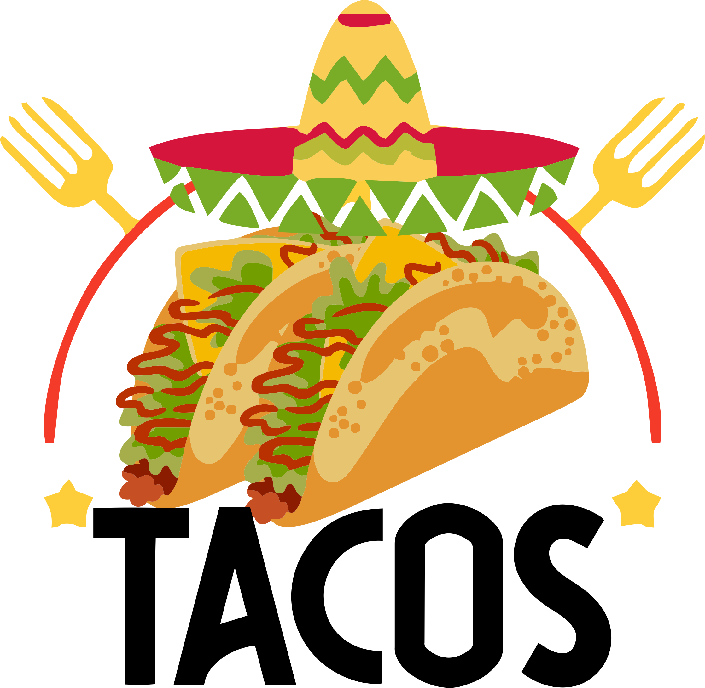

Uma mistura de cores e sabores intensos dá o tom ao Tacos Cocina Mexicana, nas
cidades de Balneário Camboriú,
Florianópolis, Porto Alegre, Campo Grande, Joinville, Rio de Janeiro em 02 lugares (Barra da Tijuca e Jardim
Botânico) e
São Paulo. Recriando uma atmosfera descontraída e bastante divertida, o local, sem dúvidas, se transformou
em um
pedacinho do México no Brasil, com decoração especialmente temática e até criação de uma linha de souvenirs.